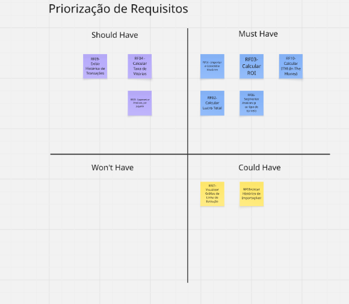
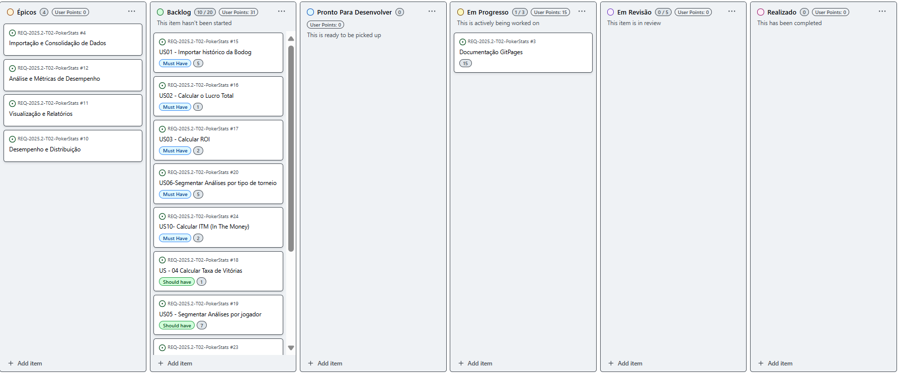
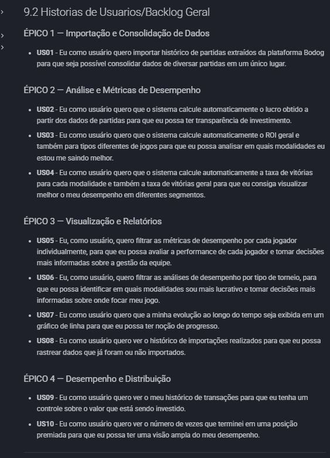
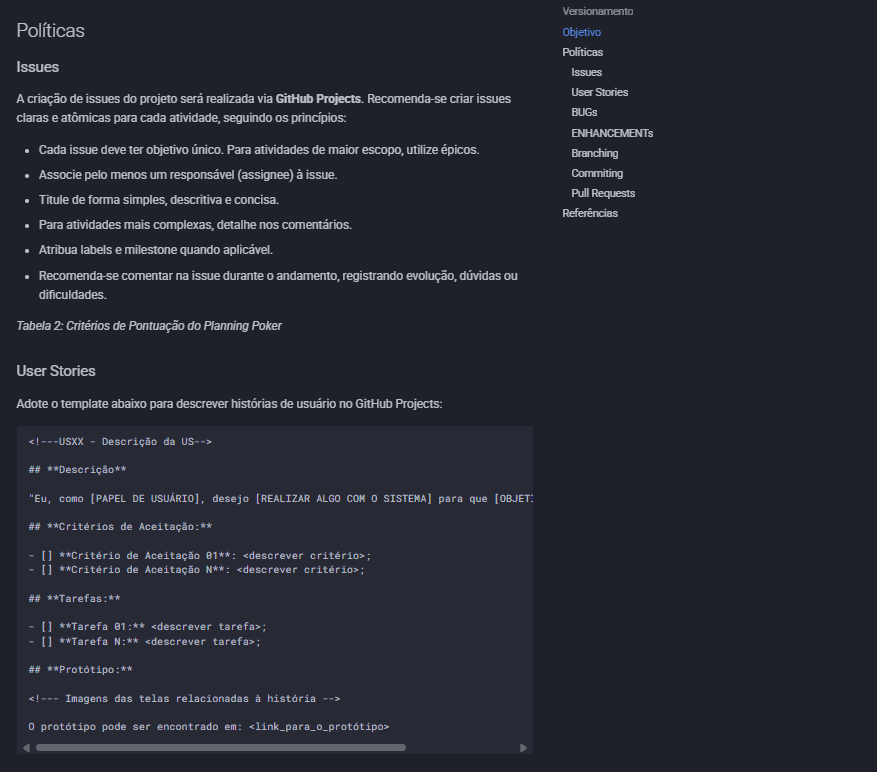
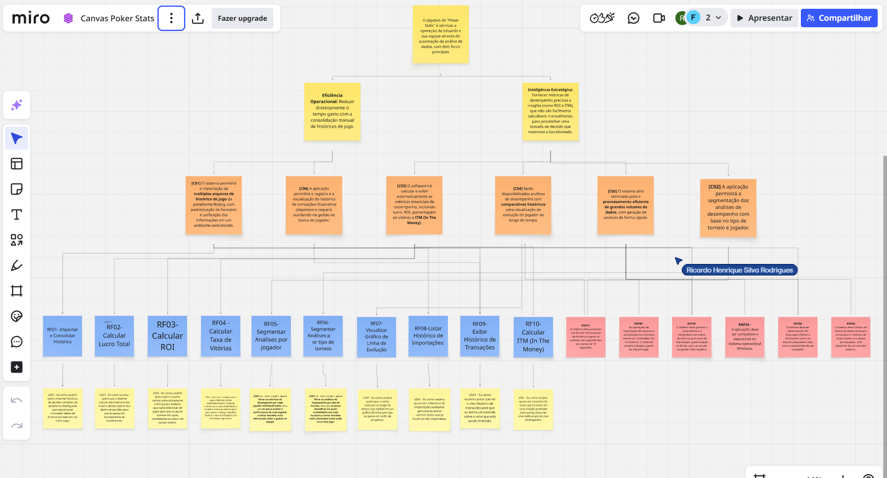
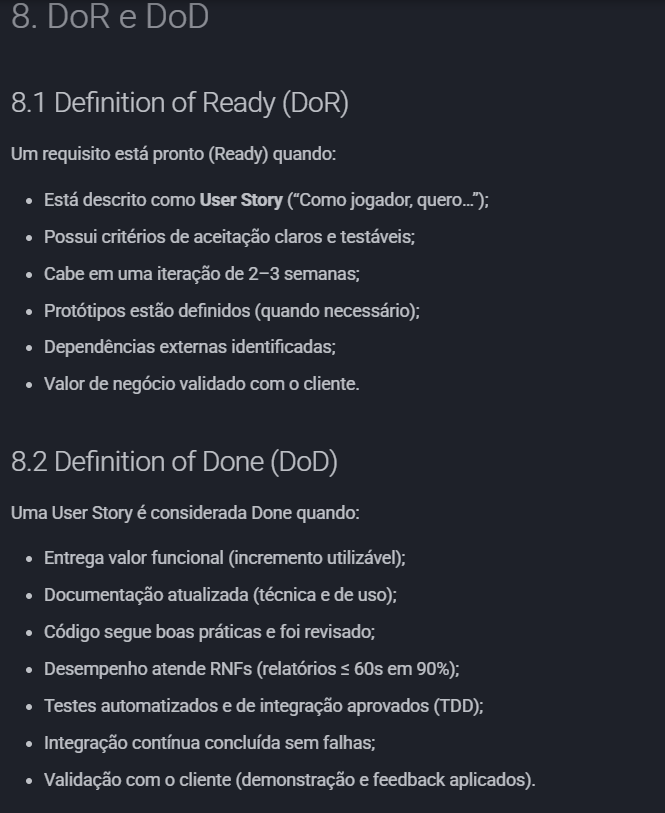
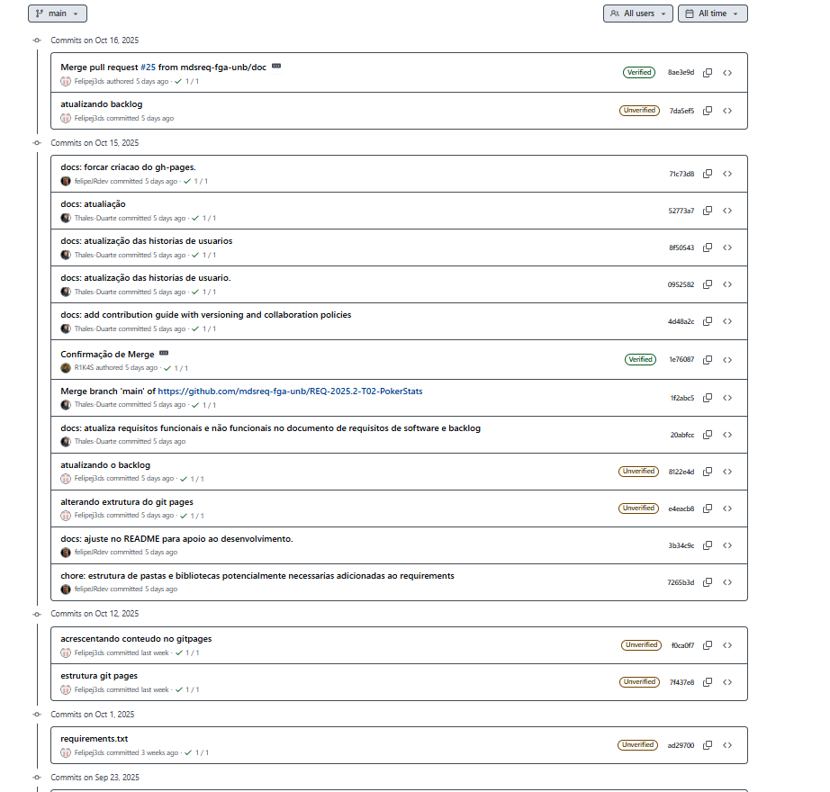
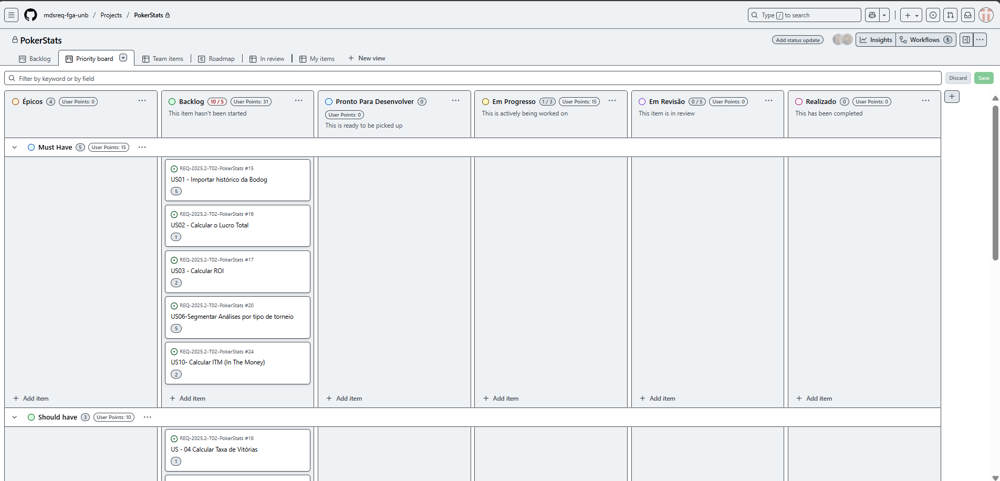
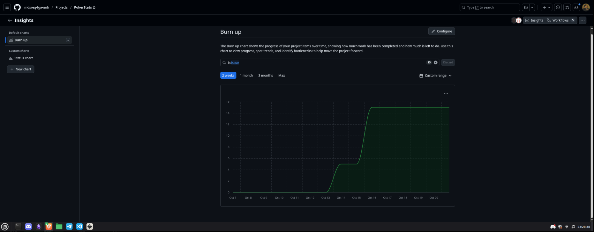

10 Evidências de realização das atividades
Licitação e Descoberta
Entrevistas:
- Evidência: registros, atas, prints ou gravações de reuniões (ou evidências simuladas baseadas nas discussões realizadas).
- Entrevista - 22/09

- Entrevista - 04/10

- Entrevista - 12/10

Análise e Consenso
Priorização Contínua:
- Evidência: avaliação do valor de negócio dos requisitos registrados no backlog.

Visualização do Fluxo de Trabalho:
- Evidência: quadro Kanban representando o fluxo de trabalho.

Discussões em Equipe (Refinamento): (OK)
- Evidência: prints, gravações de reuniões de refinamento ou os próprios resultados do refinamento.
 (../img/Evidencias/3_Declaracao/1CriacaoDeEpicosEUserHistory/Refinamento.png)
(../img/Evidencias/3_Declaracao/1CriacaoDeEpicosEUserHistory/Refinamento.png)
Implementar Ciclos de Feedback (Kanban + XP): (NO)
- Evidência: documentação ou registros de reuniões de feedback, retrospectivas.
Gerenciamento do Fluxo: (NO)
- Evidência: prints ou gravações de reuniões onde o fluxo de trabalho é gerido e ajustado.
Declaração
Criação de Épicos e User Stories:
- Evidência: épicos e user stories documentados no backlog.

Tornar as Políticas Explícitas:
- Evidência: O guia de contribuição: Guia de Contribuição - Poker Stats
- Link de referência: https://mdsreq-fga-unb.github.io/REQ-2025.2-T02-PokerStats/GuiaDeContribuicao/

Representação
TDD (Test-Driven Development): (NO)
- Evidência: presença de testes automatizados no código.
Protótipos Rápidos: (NO)
- Evidência: os próprios protótipos desenvolvidos.
Refatoração (XP): (NO)
- Evidência: prints de commits com títulos de “refatoração” ou histórico no repositório que demonstra melhoria contínua do código.
Mapa de rastreabilidade:
- Evidência: O mapa que rastreia a relação Historias de Usuario -> Requisitos -> Caracteristicas de produto -> Objetivos do negocio.

Verificação e Validação
Verificação de DoR (Definition of Ready) e DoD (Definition of Done):
- DoR & DoD - Poker Stats
- Evidência: registros dos próprios DoR e DoD utilizados.
- Link de referência: https://mdsreq-fga-unb.github.io/REQ-2025.2-T02-PokerStats/unidade2/DoR%26DoD/

Validação de Requisitos por meio de Checklists:
- Evidência: checklists preenchidos com critérios de aceitação.
Propriedade Coletiva do Código (XP):
- Evidência: histórico de commits mostrando múltiplos autores contribuindo em diversas partes do código.

Integração Contínua (XP + Kanban):
- Evidência: print do dashboard da ferramenta de CI (GitHub Actions, Jenkins, etc.) mostrando builds executados e pipelines configurados.
Organização e Atualização
Quadro Kanban:
- Evidência: o próprio quadro Kanban atualizado e ativo.
Limitação do Trabalho em Progresso (WIP):
- Evidência: quadro Kanban com limites explícitos de WIP por coluna (ex: “Em andamento — máx. 2 tarefas”), prints mostrando o respeito aos limites.

Pequenas Entregas:
- Evidência: histórico de deploys, commits ou releases frequentes.
Atualização do Processo
Ajustes no Quadro Kanban:
- Evidência: histórico de modificações no Kanban (prints comparando versões, logs de alterações).

Refinamento das Políticas Explícitas:
- Evidência: DoR e DoD.